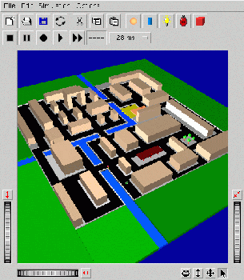
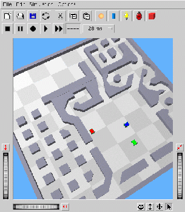

Webots
- Khepera szimulálásának bõvítése, új robotok támogatása
- Három dimenziós, szabadon szerkeszthetõ környezet


- Új szenzorok a szofisztikáltabb viselkedésleíráshoz
- Szürke kamera
- Színes kamera
- Panorama kamera
- Fogókar
- Teljesebb térérzékelés és manipulálálás
- Szenzorok használata
- Felügyelõ a keretek kezelésére (kommunikáció, energiaforrások,
webot pozíciója)
- Félénk felfedezõ Webots módra
Braitenberg film